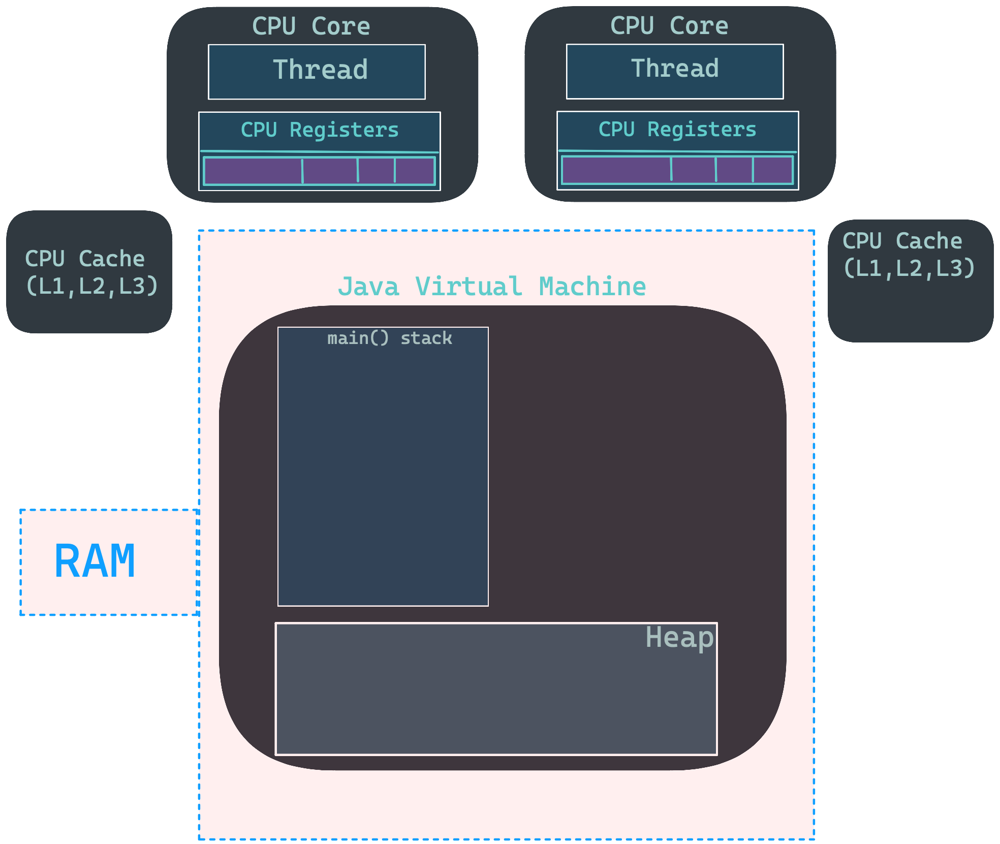
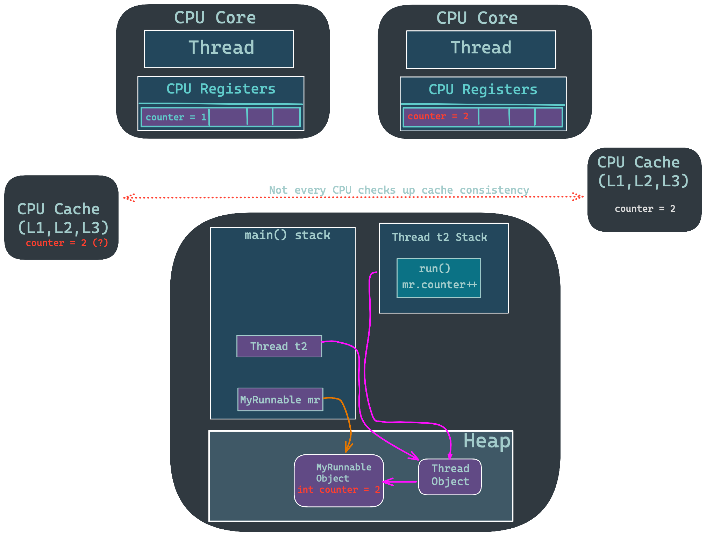

Objects in Java¶
It is safe to assume that Java language expects you are going to write only Object-Oriented programs. Even though you are treating everything as an object you manipulate directly its reference.
Reference to an object can be compared to a gamepad (reference) of a console (object). As long as you have gamepad in your hands you can send messages to console to turn on the game, pause it or simply shut down the device. So you are able to modify object via its reference, reference itself has no use when it is not connected to the object. If gamepad is not paired with console you cannot control it.
Let's take look at objects and references with String example.
To create reference first we must specify a type of object it can be connected to and after that
name of the reference (it cannot start with the number or take name of any reserved keyword in Java)
1 2 | |
Here we have only reference of type String with variable name str (we will cover variables
soon - I need to explain few things before).
If I tried print str I would get compile error that our str might not be initialized
It is always safer to initialize reference as early as you know what to put to them, ideally in the same line as they are declared.
1 2 | |
Other objects than strings use a bit different initialization syntax, which consist of a
new keyword.
1 | |
That is how we create new object of type StringBuilder and assign it to the reference sb.
Where Java Stores Objects?¶
There are five places where Java stores objects:
Registers¶
- It is the fastest storage option.
- They temporarily holds frequently used data, instructions, and memory address that are to be used by CPU.
- They hold instructions that are currently processed by the CPU.
- Since Java runs inside a virtual machine it is not possible to access low-level hardware such as the registers of your CPU. Especially because their representation and presence may change from one system to another.
Stack¶
- This (second fastest) option is stored inside RAM memory, however CPU can access it via stack pointer.
- The order of adding stuff to it is Last In First Out (LIFO), which means first item is last to leave the stack and last item is first to leave the stack (it is like adding things atop of each other).

- Every thread running in Java has its own stack and the scope of stack is limited to the thread.

- Stack memory contains of method-specific values that are short-lived, variables including references to other objects (objects themselves are placed in the heap), local variables for methods that are being executed. If two threads are running the same code, they still create their own local variables.
- Memory allocated to stack lives until the function returns.
- If there is no space for creating the new objects, it throws the
java.lang.StackOverFlowError.
To visualize things I wrote above I'll show you the program that creates Runnable object and
two Thread objects that are sharing the same Runnable and draw a diagram that will help you with
finding out what's going on.
1 2 3 4 5 6 7 8 9 10 11 12 13 14 15 16 17 18 19 20 21 | |
1 2 3 4 5 6 7 8 9 10 11 12 13 14 15 16 17 18 19 20 21 22 23 | |
1 2 3 | |
Below is the graphical of the stuff going inside JVM. For now there is no CPU - I don't want to show too much details at once. Solid arrows are representing references, dashed arrows are representing side effects of method calls.

After main() method is finished, all threads are finished and all objects are destroyed.
And know let's modify a little our program by removing syncronized keyword from our run()
method:
1 2 3 4 5 6 7 8 9 10 11 12 13 14 15 16 17 18 19 20 21 22 23 | |
That will lead to situation called race condition. It means that more than This topic is generally shown in more advanced parts in Java books and tutorials, we will talk about it in greater detail while exploring multithreaded features of Java language, but I want to show you what stays behind it so you will understand the significance of hardware architecture you running your Java programs on, especially the CPU. Even if you don't have control over the CPU registers nor its cache it is still affecting your results of the program.
Let's return to the example of SharedRunnableand MyRunnable to see how it affects the results.
In SharedRunnable there are two lines t1.join(); and t2.join();.
In this program both threads are finishing their execution before the value of counter is printed.
However if we remove those lines, we have no guarantee that threads will do their job before final
printing the value of counter
and if we start running program over and over again we have guaranteed occurrence of one of
threads finishing job as last one.
after printing value:
1 2 3 4 5 6 7 8 9 10 11 12 13 14 15 | |
1 2 3 | |
The diagram of this problem is shown below. It might look like on the border of readability, however it is still simplified There are 13 steps showing the order of execution of the program. Most likely not you won't see every toggle button on the screen, so as soon as you click on the first one you'll be able to use Left and Right keys to scroll through them.
- Beginning of
main()method. - Structures occupying RAM are in dashed box (I will remove it in next slide to reduce clutter). 
MyRunnableobject is created with a referencemr.- Information about the state of the
counteris sent to CPU registers.
Threadobject is created with a referencet1.- The object holds a reference to
MyRunnableobject. - New thread stack is assigned in the RAM.
-Thread object is created with a reference t2.
-The object holds a reference to MyRunnable object.
-New thread stack is assigned in the RAM.
t1thread is started viastart()method, which callsrun()method.run()method incrementscountervariable inMyRunnableobject - it sends information to CPU to update the value ofcountervariable and we see thatcountervariable is 1 in CPU register.
- CPU sends updated value to the cache and then it propagates information to the RAM to the
MyRunnableobject.
t1threads finish execution and it is destroyed.t2thread is started viastart()method, which callsrun()method and it begins sending information to CPU.
- In the meantime
mr.printCounter()method is called and it printscountervariable: thread runs independently from the main() once started it happens to do stuff slower thanmr.printCounter()method. ]
run()method finishes sending information to the CPU.
- CPU sends updated value to the cache and then it propagates information to the RAM to the
MyRunnableobject.
t2.start()finishes execution and it is destroyed.- stack of
t2thread is freed by the Garbage Collector 
 -
- t2 reference is destroyed and it's object is freed by the Garbage Collector.
mrreference is destroyed and it's object is freed by the Garbage Collector.- Program ends
You can read about the stack.
The Heap¶
- Like the stack it is a pool of memory in the RAM.
- It is the place where objects are stored - when you write
newkeyword, the object is created and placed in the heap. - It can be dynamically allocated and deallocated - compiler doesn't have to know how long objects need to stay in the heap(unlike in the stack).
- Cleanup of the heap is done by the garbage collector, it is not automatic, unlike in stack than in stack.
- It is slower than the stack.
- If heap space is full, Java throws
java.lang.OutOfMemoryError. - You can change heap size via argument
Constant Storage¶
- The constant value is usually placed inside the program code.
This is safe because it will never be changed.
Example of constant Read Only Memory (ROM) is a
String Memory Pool- everyString(not created bynew) is stored in this static storage and becomes a constant. I will explain it with all details later, when I will talk aboutStringclass later.
Non-RAM Storage¶
- It is permanent storage of the computer.
- It can store program data even if it is not running.
- It is often used for:
serialized objects- objects converted to sequence of bytes usually of sending it over the network for the other program to read.persistent objects- data that is stored in the file system for saving objects state after program is closed. Something like saving the game state.
Primitive Data Types¶
Allocating memory for every small bit of data on the heap is somewhat costly thing to do.
That is why there are few data types that are allocated on the stack so we do not write new to
create them and instead of being reference, they hold the actual value.
We call them "primitive" data types or "simple" data types or "primitives".
Ranges of primitive types are not dependent on the machine you are running on your program,
which is really cool thing, because it means programs are portable unlike C or C++, which creates
different sizes for 32-bit and 64-bit machines (and other).
| Primitive | Size | Min | Max | Wrapper |
|---|---|---|---|---|
boolean |
- | - | - | Boolean |
byte |
8 bits | \(-128\) | \(+127\) | Byte |
char |
16 bits | Unicode 0\u0000 |
\(65,535\) \uffff |
Character |
short |
16 bits | \(-32,768\) | \(+32,767\) | Short |
int |
32 bits | \(2^-31\) | \(+2^31 - 1\) | Integer |
long |
64 bits | \(-2^63\) | \(+2^63 - 1\) | Long |
float |
32 bits | IEE754 (6-7 significant digits) | IEE754 | Float |
double |
64 bits | IEEE754(15 significant decimal digits) | IEEE754 | Double |
void |
- | - | - | Void |
boolean¶
booleansize is not specified, it can take eithertrueorfalseliteral values.
byte¶
- byte data type is an 8-bit signed two's complement integer.
- It has a minimum value of -128 and a maximum value of 127 (inclusive).
- The byte data type can be useful for saving memory in large arrays.
int¶
- an
intis most common data type in Java. - it is 32-bit signed integer. (signed datatype is the one that can hold negative values).
- To see its min and max value you can use
Integer.MIN_VALUEandInteger.MAX_VALUEconstants. - it has a minimum value of \(-2^{31}\) and a maximum value of \(2^{31}-1\)
long¶
- long data type is a 64-bit two's complement integer. It has minimum value of \(-2^{63}\) and a maximum value of \(2^{63}-1\)
- to create
longvalue you need to addLorlsuffix to the number, for example123Lis alongvalue of123. You are encouraged to useLsuffix for clarity:llooks similar to1. - To check min and max
long valueyou can useLong.MIN_VALUEandLong.MAX_VALUEconstants. - If we do not add
Lsuffix, , Java will interpret the number asintvalue even if we specifiedlongtype.:
1 | |
1 | |
1 | |
float¶
floatis single precision 32-bit floating point number.- To create
floatvalue you need to addForfsuffix to the number, for example123.45F - is a
floatvalue of123.45. - If you do not specify
Fsuffix Java will interpret the number asdoublevalue, even if we defined type asfloat:
| float test | |
|---|---|
1 2 3 4 5 6 7 | |
double¶
doublename refers to the fact that it has twice the precision offloattype.- for double we can use
dorDsuffix, but it is quite useless, because every floating-point number isdoubleby default.
Warning
Do not use double (or any primitive) data type for storing money or time, because it dosesn't
provide enough precision.
For example System.out.println(2.0 - 1.1); will print out 0.8999999999999999.
To deal with high precision numbers, you should use BigDecimal or BigInteger class.
BigInteger supports arbitrary-precision integers, while BigDecimal supports
arbitrary-precision fixed-point numbers.
Both classes have methods that work like their primitive counterparts.
Life of Objects¶
Scope¶
The scope describes the extent of the visibility of the variables that
program can see and utilize them..
Scope is created by using {} braces.
Braces and area between them form the block of code.
Scope of Primitive Data Types¶
Primitives are created when they are declared and destroyed when they are no longer in the scope.
Here is an example of scope of primitives:
| scope example | |
|---|---|
1 2 3 4 5 6 7 8 9 | |
1 2 3 4 5 6 7 8 9 10 11 12 13 14 15 16 17 18 19 20 21 22 23 24 25 | |
console x = 10 y = 20 z = 30 y = 30 x = 40
As you can see above z is not visible afer its scope is closed.
Scope of Objects¶
Objects lifetime differs from primitives. After objects scope ends, its reference is destroyed, but object itself remains in the memory. You might ask yourself, well, if we do not destroy objects how they are cleaned up?
In java there is special tool that automatically does that task for you - it is called
garbage collector.
It searches for all objects created with new keyword and destroys them when they are no longer
referenced anywhere.
It is siginificant addition of comfort over programming in C++ which requires manual destruction
of objects.
There even was architecture of CPU (IBM Cell Processor) in Playstation 3, that required programmers
writing in C++ to manually perform destroying objects in specific order and not doing it
significantly reduced game performance.
So if you ever wonder why most multiplatform games of that era looked worse on PS3 than Xbox 360,
there you have it.
It is the easiest to see it on "Red Dead Redemption" it even has lower resolution on PS3.
It had some cool games though, like "Folklore" or "Metal Gear Solid IV"
If you heard about "memory leak", it happens when programmer forgets to destroy objects and they accumulate in RAM. With Java you do not have to worry about it - garbage collector does it for you.
Creating New Data Types¶
To define our own datatypes we form classes and put our ideas about the objects into them. If you feel uncertanity about the concept of classes, you can jump to this chapter Object Oriented Concepts, but I will write a short reminder so you can focus on the topic: Classes are the blueprints for creating the objects - they define what you can do with the object and how to communicate with it (ie the inteface).
Each class can consist of:
- fields (data members):
- methods:
Fields¶
Fields are references to objects or defined primitive variables, that are part of a class.
If a field is a reference to an object, we have to initialize it with new keyword somewhere.
Object initializatio in classes is art in itself and I will cover it later.
I shown it in example below, but don't form assumption that this is the only way to perform it
correctly.
| Fields Example | |
|---|---|
1 2 3 4 5 | |
Fields class we need to use new keyword:
| Fields Test | |
|---|---|
1 | |
| Dot Notation | |
|---|---|
1 2 3 | |
| Modifying Object State | |
|---|---|
1 2 3 | |
1 2 3 4 5 6 7 8 | |
Default Values of Primitive Data Types¶
When you declare a field with a primitive data type in a class, it is initialized with a default value if you do not specify one explicitly.
| Type | Default Value |
|---|---|
boolean |
false |
char |
\u0000 |
byte |
0(byte) |
short |
0(short) |
int |
0 |
long |
0L |
float |
0F |
double |
0D |
Danger
Default values of primitive data types are guaranteed only for variables that are members of
a class.
Local variables are not initialized with default values.
It is good practice to initialize all variables with a value and do not rely default values,
because it reduces the possibility of creating bugs.
If you do not initialize local variable and use it your code will not compile and you will get
java: variable x might not have been initialized where x is the name of the variable.
Here is program demonstrating default values:
1 2 3 4 5 6 7 8 9 10 11 12 13 14 15 16 17 18 19 20 21 22 23 24 25 26 | |
1 2 | |
Methods¶
Methods in Java form the interface of communication between objects. Methods are quite similar to a functions with a few differences: Functions require us to pass them all of their data explicitly - function can only work with data you provide to it (with the exception of global variables).
Methods presume the existence of an object, which is passed when we call them. For this reason, a method can access all of the data that is associated with the class to which that object belongs.
Methods consist of:
- return type: indicates what type of value the method will give when it ends
- method name: specifies what you will have to type when you will call the method
- arguments: variables that you pass to the method to do something with them
- method body: space in which you write code to perform some task
Here is structural representation of those 4 things:
1 2 3 | |
Methods in Java can be created only as part of a class unlike in Python and Bash - those do not force you to have any class encapsulating them, so it is not a universal thing among the programming languages.
A method can be called only from an object or a class, if method is static. I will cover what does static mean shortly so don't worry. To call a method we need object reference, place dot after that and then type method name:
| Calling a Method | |
|---|---|
1 2 3 4 5 | |
| Method Returing a Value | |
|---|---|
1 2 3 | |
| Saving Return Value | |
|---|---|
1 | |
obj is an object of some class that contains getTwo() method.
Type of the variable has to be compatible with the return type of the method.
Method Arguments¶
If you ever asked yourself - "what are exactly method arguments: references to variables outside of the method? Copies? Is there a unique mechanism for passing data to a method?", this paragraph is for you.
In Computer Science there are two terms for describing how parameters are passed to a method,
- call by value - it means that the method gets a copy of the value of the argument.
- call by reference - it means method gets the memory location of the argument that is passed.
Some language can provide both mechanisms, like C++ and here is call by reference mechanism of
C++ so you can have a visualization of the concept (& symbol is used to indicate that the
argument is passed by reference):
1 2 3 4 5 6 7 8 9 10 11 12 13 14 15 16 17 18 19 20 21 22 23 24 25 | |
1 | |
Java has only one mechanism for passing data to a method, and it is call by value - when you pass primitives into a method, you get a copy of a primitive, when you pass reference to an object, you get a copy of that reference (which points to the same object as previous one).
Because we operate on copies, it is impossible to change contents of the variable passed as an argument.
Primitive Type Parameters¶
1 2 3 | |
raiseTemperature method, the value of centimeters will not change.
Based on the fact we can't modify parameter value and primitive types are not references in Java
all changes of their values are lost if we won't return them.
¶
To see what happens under the hood with primitive parameters (arguments), lets check out method that is supposed to add coupons for lowering the price:
1 2 3 4 5 6 7 8 9 10 11 12 13 14 | |
As you can expect after looking from the picture, the value of price is not changed.
This is what happens:
priceis initialized with the value of 100.applyTenPctDiscmethod is called, and it gets a copy of the value ofpriceand assigns it tox.xis updated with the new value of0.9- the function ends and
xis destroyed.
Object Reference Parameters¶
As I wrote earlier - even if we pass a reference to an object to a method, the method gets a copy of that reference. To demonstrate that, lets try to swap two objects:
1 2 3 4 5 6 7 8 9 10 11 12 13 14 15 16 17 18 19 20 21 22 23 24 25 26 27 28 29 30 31 32 33 34 35 36 37 | |
Here we have two references to Person objects, and we call swap method on them.
a and b are copies of p1 and p2 references respectively and method swaps those copies.
After method finishes, p1 and p2 their references are destroyed from the stack memory.
In summary, a method can't make an object parameter refer to a new object, because copied
reference will be destroyed after the method ends.
- orange arrows show copying of the references
- blue arrows show references outside the method
- green arrows show references inside the method, which are destroyed after the method ends
As you have seen earlier - it is impossible to change primitive type parameters.
It works differently with arguments that are object references:
even if in the inside of the method we operate with a copy of the original reference, we can still
modify object state, because copied reference points to the same object as the original one.
It is like you have two file shortcuts (soft links for UNIX people) pointing to the same file.
Let's check this feature with an example of swapping names of two Person objects:
1 2 3 4 5 6 7 8 9 10 11 12 13 14 15 16 17 18 19 20 21 22 23 24 25 26 27 28 29 30 31 | |
1 2 3 4 5 6 | |
Here is the visual representation of the code above, everything that is not on the Heap is on the Stack.
p_1.getName() returns "John"
tmp_name refers to String object with value "John"
p_2.getName() returns "Mary"
p1_setName method is called with "Mary" as an argument
p_2.setName(tmp_name) is called with "John" as an argument
Method swapNames ends and all local variables are destroyed.
To prove that passed reference to the method points to the same object as the original one, we can
write small test program with a little help of default printing mechanism of Java: if \(x\) is a
reference to an object of type \(T\), and \(T\) does not have special method for printing, which is
called toString, then \(x\) will be printed as T@address_of_x or if \(T\) is in the package \(p\)
which we imported, then
\(x\) will be printed as p.T@address_of_x.
Tip
I will cover packages later, because right now I'm trying to focus on explaining the inner
workings of the objects and references.
All you need to know right now about packages is they organize classes like directories:
so package core.objects_java; means that all classes in this package are in the
core/objects_java
BTW, I'm writing such comments to form something storytelling for you.
You can let me know if it is beneficial for you or you rather find it annoying.
| Printing Adress | |
|---|---|
1 2 3 4 5 6 7 8 9 10 11 12 13 14 | |
| Output | |
|---|---|
1 2 | |
As you see o and obj are references to the same object.
This is a treat in terms of efficiency, because we don't need to assign new resources for
duplicating the object.
static keyword¶
Explicit definition of the static is "bound by class / not bound by the object"
Practically it is used for two things:
- you want to have a single shared field of the class regardless of how many objects you create
- you need method that can run without existence of the object of enclosing class
static fields¶
1 2 3 4 5 6 7 8 9 10 11 12 13 14 15 16 17 18 19 20 21 22 | |
1 2 3 4 5 6 7 8 9 10 11 12 13 14 15 16 17 18 19 20 21 22 23 24 25 26 27 28 29 30 31 32 33 34 35 36 37 38 39 | |
| Output | |
|---|---|
1 2 3 4 5 | |
Here is how Java sees the code shown above in simplified form (Java has few special areas in heap):
static globalId is created in the heap (even if we do not create any Employee object)
and after that main method is called.
Employee object is created with employee_1 reference to it
Employee object is created with employee_2 reference to it
employee_1.setName("Lucy") is called
employee_2.setName("Sally") is called
employee_1.setEmpId() is called
empId = ++globalId means that globalId is incremented by 1 and then assigned to empId
globalId is seen by all the objects of the class and as you see there is only one
globalId in the heap and so every object has the same information about it and
that is what static does.
employee_2.setEmpId() is called, which adds 1 to globalId and then assigns it to empId.
This slide is just a quick recap of final state of the variables.
In the other hand, if we do not use static keyword, we will have as many globalId as many
objects of Employee class we create.
A field that is not declared static is called instance field or non-static field.
static methods¶
If we want to have method that is not tied to the object, we make them static.
In this case, we can call them even without creating any objects.
To use static methods, we need to use class name.method_name() syntax or we can call it from
the object: object_name.method_name(), but first way is preferred, because it emphasizes the
fact that we do not need to create any object to call the method.
Here is an example of static method and use of both syntaxes:
1 2 3 4 5 6 7 8 9 10 11 12 13 14 15 16 17 18 19 20 21 22 | |
| Output | |
|---|---|
1 2 | |
An example of static method is public static void main(String[] args), in which we put all
code that we want to run.
It is static, because, we might run code that do not create any object in which main method is
contained (we might not to create any object at all, however in Java it is highly unlikely).
Aliasing¶
It describes the situation when we have more than one reference to the same object. It is often confusing for newcomers, when something is written to one of them:
1 2 3 4 5 6 7 8 9 10 11 12 13 14 15 16 17 18 19 20 21 22 23 24 25 26 27 28 | |
| Output | |
|---|---|
1 2 3 4 | |
Alias a an Alias b both point to the same object, because only one new was used.
new Alias() is called
a.setVal(10) is called
b = a is called
b.setVal(20) is called
That works differently with primitive types:
1 2 3 4 5 6 7 8 9 10 11 12 13 | |
| Output | |
|---|---|
1 2 3 4 | |
Primitive types are copied by value, so when we change b value, it does not change a value.
As you have seen earlier with methods, when we pass object reference into a method in fact
it is an alias.
Making exact copies of object in Java is quite complex, and we will cover it in later chapter: Copying Objects
- test ** test2